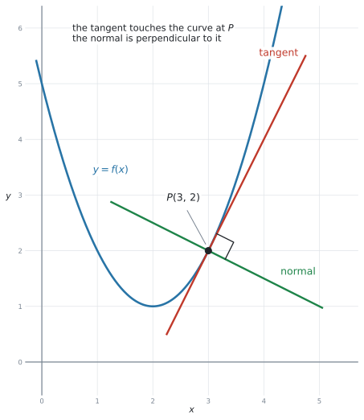
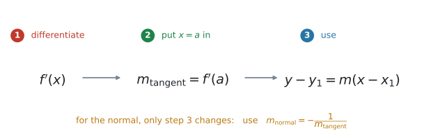
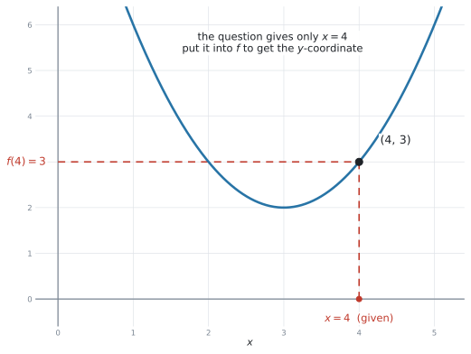
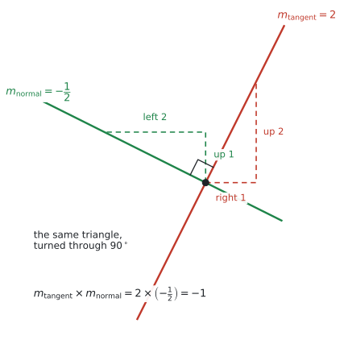
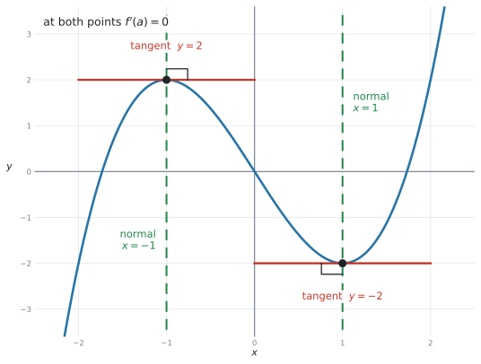

SL 5.4 — Tangents and normals（接線と法線）
- tangent（接線）と normal（法線）が、図の上で分かる。
- 与えられた \(x = a\) に対して、\(y\) 座標を \(f(a)\) から自分で作れる。
- 接線の傾きが \(f'(a)\) だと分かり、接線の式を求められる。
- 法線の傾きが \(-\dfrac{1}{f'(a)}\) だと分かり、法線の式を求められる。
- \(f'(a) = 0\) のときの特別な形（接線が水平、法線が垂直）を書ける。
- 「傾きが \(k\) になる点」「ある直線と平行な接線」を求められる。
- 答えを \(y = mx + c\) でも \(ax + by + d = 0\) でも書ける。
- 電卓で確かめられる（シラバスが
analytic approaches and technologyの両方を求めています）。
公式集の Topic 5 の欄は 5.3、5.5、5.8 だけです。5.4 の欄はありません。
ただし、必要な式はすでに配られています。 SL 2.1 の欄にある直線の式です。
\[ y = mx + c, \qquad ax + by + d = 0, \qquad y - y_1 = m(x - x_1) \tag{1}\]
この項目でやることは、この式に入れる \(m\) と \((x_1, y_1)\) を、微分で作ることだけです。
この本では、接線の傾きを \(m_{\text{tangent}}\)、法線の傾きを \(m_{\text{normal}}\) と書きます。 どちらの話をしているのかが、記号を見るだけで分かるようにするためです。
一方、次の2つは公式集に載っていません。 自分で覚えてください。
\[ m_{\text{tangent}} = f'(a), \qquad\qquad m_{\text{normal}} = -\frac{1}{f'(a)} \tag{2}\]
\(-\dfrac{1}{m}\) は SL 3.5 で出てきたものとまったく同じです。あちらは垂直二等分線、こちらは法線。使う場面が違うだけです。
The idea
1. tangent と normal
tangent line（接線）は、その点で曲線と同じ傾きをもつ直線です。SL 5.1 で「弦の傾きを近づけていった先」として見た、あの直線です。
接線が曲線を横切ることもあります。 「触れるだけで交わらない」とはかぎりません。
normal line（法線）は、その点で tangent line に垂直な直線です。

図 1 の \(P\) で、赤い接線と緑の法線が直角に交わっています。
| 英語 | 日本語 | その点での傾き |
|---|---|---|
| tangent | 接線 | \(f'(a)\) |
| normal | 法線 | \(-\dfrac{1}{f'(a)}\) |
normal は「ふつうの」ではありません
normal line（法線）は、その点で tangent line に垂直な直線のことです。「ふつうの直線」ではありません。
\(2\) 直線が垂直であることは perpendicular と言いますが、曲線の接線に垂直な直線を指すときは normal と言います。
2. 手順は3つです
どんな問題でも、やることは同じです。

- \(f'(x)\) を求める（SL 5.3 の公式）
- \(x = a\) を代入して、接線の傾き \(m_{\text{tangent}} = f'(a)\) を出す
- \(y - y_1 = m(x - x_1)\) に入れる
法線のときは、手順3で使う傾きが \(m_{\text{tangent}}\) から \(m_{\text{normal}}\) に変わるだけです。手順1と2はまったく同じです。
接線も法線も、同じ点 \(P\) を通ります。 ですから、代入する \((x_1, y_1)\) はどちらも同じです。
変わるのは傾きだけ（\(m_{\text{tangent}}\) か \(m_{\text{normal}}\) か）。\(1\) つの問題で \((a,\ f(a))\) を \(1\) 回求めれば、接線にも法線にも使えます。
3. \(y\) 座標は、自分で作ります
この項目で一番よく落とすところです。
問題文は、たいてい \(x = 4\) における接線を求めなさいという形で来ます。\(y\) 座標は書いてありません。

\(f(x) = x^2 - 6x + 11\) なら、
\[ f(4) = 16 - 24 + 11 = 3 \]
なので、接点は \((4,\ 3)\) です。
傾きのほうは、微分した式に入れます。
\[ f'(x) = 2x - 6 \quad \Rightarrow \quad m_{\text{tangent}} = f'(4) = 2(4) - 6 = 2 \]
点と傾きがそろったので、手順3の式に入れます。
\[ y - 3 = 2(x - 4) \]
よって、\(x = 4\) における接線の方程式は
\[ y = 2x - 5 \]
です。点だけ、あるいは傾きだけでは、ここまでたどり着けません。
\[ f(4) = 3 \ \longrightarrow \ \text{点} \ (4,\ 3) \qquad\qquad f'(4) = 2 \ \longrightarrow \ m_{\text{tangent}} = 2 \]
この \(2\) つは別の計算です。片方だけで止まると、直線の式が作れません。
「もとの式に入れる」→ 点。「微分した式に入れる」→ 傾き。 声に出して確かめてください。
4. 法線の傾きは、三角形を \(90^\circ\) まわしたもの
接線の傾きを \(m_{\text{tangent}}\)、法線の傾きを \(m_{\text{normal}}\) と書くことにします。どちらの傾きの話なのかが、記号だけで分かります。
\(m_{\text{tangent}} = 2\) なら、\(m_{\text{normal}} = -\dfrac{1}{2}\) です。

図 4 を見てください。
- 接線 … 右へ \(1\)、上へ \(2\) → \(m_{\text{tangent}} = 2\)
- 法線 … 上へ \(1\)、左へ \(2\) → \(m_{\text{normal}} = \dfrac{1}{-2} = -\dfrac{1}{2}\)
同じ三角形を \(90^\circ\) 回しただけです。だから
\[ m_{\text{tangent}} \times m_{\text{normal}} = 2 \times \left(-\frac{1}{2}\right) = -1 . \]
\[ m_{\text{normal}} = -\frac{1}{m_{\text{tangent}}} \]
| \(m_{\text{tangent}}\) | \(m_{\text{normal}}\) |
|---|---|
| \(2\) | \(-\dfrac{1}{2}\) |
| \(-3\) | \(\dfrac{1}{3}\) |
| \(\dfrac{3}{4}\) | \(-\dfrac{4}{3}\) |
\(2\) つの操作をします。ひっくり返す、そして符号を変える。片方だけで止まる誤りが多いところです。
\(m_{\text{tangent}}\) がもともと負なら、\(m_{\text{normal}}\) は正になります。
5. \(f'(a) = 0\) のときは、特別な形になります
\(m_{\text{tangent}} = 0\) のとき、\(-\dfrac{1}{0}\) は計算できません。割り算をしてはいけません。
このときは、図で考えます。

- 接線は水平 → 式は \(y = f(a)\) … \(y\) が定数の形（横の線）
- 法線は垂直 → 式は \(x = a\) … \(x\) が定数の形（たての線）
図 5 は \(f(x) = x^3 - 3x\) です。\(f'(x) = 3x^2 - 3 = 0\) より \(x = \pm 1\)。
| 点 | 接線 | 法線 |
|---|---|---|
| \((-1,\ 2)\) | \(y = 2\) | \(x = -1\) |
| \((1,\ -2)\) | \(y = -2\) | \(x = 1\) |
垂直な直線は $x = $ 定数です。$y = $ ではありません。
\(x = -1\) は「\(x\) 座標がずっと \(-1\) の線」、つまりたての線です。SL 3.5 でも同じ注意をしました。
迷ったら、その線が図でたてか横かを見てください。 たてなら \(x =\)、横なら \(y =\) です。
6. 答えの形
問題文が形を指定していなければ、\(y = mx + c\) で書けば十分です。
指定があるときは、そのとおりに整理します。
| 問題文 | 書き方 |
|---|---|
| （指定なし） | \(y = 2x - 5\) |
in the form y = mx + c |
\(y = 2x - 5\) |
in the form ax + by + d = 0 |
\(2x - y - 5 = 0\) |
\(y = -\dfrac{1}{4}x + \dfrac{11}{2}\) なら、両辺を \(4\) 倍します。
\[ 4y = -x + 22 \quad \Rightarrow \quad x + 4y - 22 = 0 \]
\(a\)、\(b\)、\(d\) は整数にするのがふつうです。\(ax + by + d = 0\) は公式集の SL 2.1 にある形です。
Why it works
なぜ「接線の傾き \(= f'(a)\)」なのかは、SL 5.1 ですでに見ました。\(f'(a)\) は、その点での接線の傾きそのものとして作られた量だからです。
ここで説明するのは、法線の傾きがなぜ \(-\dfrac{1}{m}\) になるかです。
傾き \(m\) の直線は、右へ \(1\) 進むと縦に \(m\) 変わります。 向きを表すのは、横 \(1\)・縦 \(m\) の組 \((1,\ m)\) です。
これを \(90^\circ\) 回すと、横の分と縦の分が入れかわり、片方の符号が変わります。
\[ (1,\ m) \ \longrightarrow \ (-m,\ 1) \]
新しい向きの傾きは「縦 \(\div\) 横」ですから、
\[ \frac{1}{-m} = -\frac{1}{m} . \]
図 4 が、まさにこの計算を絵にしたものです。\((1,\ 2)\) を回すと \((-2,\ 1)\)、傾きは \(\dfrac{1}{-2} = -\dfrac{1}{2}\)。
掛けると \(-1\) になることも、すぐ確かめられます。
\[ m \times \left(-\frac{1}{m}\right) = -1 \]
これは SL 2.1 の perpendicular: m₁ × m₂ = −1 そのものです。新しいことは何もありません。
\(m = 0\)（水平な線）のときだけ、この式が使えません。\(-\dfrac{1}{0}\) が計算できないからです。
そのときは、垂直な線は \(x = a\)。 第5節のとおりです。
Worked examples
問題文は英語です。意味が理解できなかったら、問題文の下の「日本語訳」を開いてください。解説は日本語です。
例題 1 The function \(f\) is given by \(f(x) = x^{2} - 4x + 5\).
Find the equation of the tangent to the curve \(y = f(x)\) at the point where \(x = 3\).
日本語訳
関数 \(f\) が \(f(x) = x^{2} - 4x + 5\) で与えられています。
\(x = 3\) の点における曲線 \(y = f(x)\) の接線の方程式を求めなさい。
手順1 … 微分します。
\[ f'(x) = 2x - 4 \]
手順2 … 傾きを出します。
\[ m_{\text{tangent}} = f'(3) = 2(3) - 4 = 2 \]
点の \(y\) 座標も要ります。 もとの式に入れます。
\[ f(3) = 9 - 12 + 5 = 2 \quad \Rightarrow \quad (3,\ 2) \]
手順3 … 直線の式に入れます。
\[ y - 2 = 2(x - 3) \]
\[ y - 2 = 2x - 6 \quad \Rightarrow \quad y = 2x - 4 \]
できた式に \(x = 3\) を入れて、\(y\) が \(2\) に戻るか見ます。
\[ 2(3) - 4 = 2 \quad ✓ \]
接線は必ず接点を通ります。 これが合わなければ、どこかで計算を間違えています。\(10\) 秒で終わる検算です。
\(f'(x) = 2x - 4\)
\(m_{\text{tangent}} = f'(3) = 2\), \(f(3) = 2\)
\(y - 2 = 2(x - 3)\)
\(y = 2x - 4\)
例題 2 The curve \(C\) has equation \(y = x^{3} - 6x^{2} + 8x + 1\). The point \(P\) on \(C\) has \(x\)-coordinate \(1\).
(a) Find the coordinates of \(P\).
(b) Find the equation of the tangent to \(C\) at \(P\).
(c) Find the equation of the normal to \(C\) at \(P\).
日本語訳
曲線 \(C\) の方程式は \(y = x^{3} - 6x^{2} + 8x + 1\) です。\(C\) 上の点 \(P\) の \(x\) 座標は \(1\) です。
(a) \(P\) の座標を求めなさい。
(b) \(P\) における \(C\) の接線の方程式を求めなさい。
(c) \(P\) における \(C\) の法線の方程式を求めなさい。
(a) \(x = 1\) をもとの式に入れます。
\[ y = 1 - 6 + 8 + 1 = 4 \quad \Rightarrow \quad P(1,\ 4) \]
(b) 微分して、\(x = 1\) を入れます。
\[ \frac{dy}{dx} = 3x^{2} - 12x + 8 \]
\[ m_{\text{tangent}} = 3(1)^{2} - 12(1) + 8 = 3 - 12 + 8 = -1 \]
\[ y - 4 = -1(x - 1) \quad \Rightarrow \quad y = -x + 5 \]
\[ m_{\text{normal}} = -\frac{1}{-1} = 1 \]
\[ y - 4 = 1(x - 1) \quad \Rightarrow \quad y = x + 3 \]
分母が負のときに符号を間違えやすいところです。
\[ -\frac{1}{-1} = -(-1) = 1 \]
接線が右下がりなら、法線は右上がりです。図 1 を思い出せば、符号の向きは目で確かめられます。
(a) で求めた \(P(1,\ 4)\) を、(b) でも (c) でも使います。
\(2\) 回計算する必要はありません。変わるのは傾きだけ（\(m_{\text{tangent}} \to m_{\text{normal}}\)）です。
(a) \(P(1,\ 4)\)
(b) \(\dfrac{dy}{dx} = 3x^{2} - 12x + 8\), \(m_{\text{tangent}} = -1\)
\(y - 4 = -(x - 1)\), so \(y = -x + 5\)
(c) \(m_{\text{normal}} = 1\)
\(y - 4 = x - 1\), so \(y = x + 3\)
例題 3 The function \(f\) is given by \(f(x) = x^{3} - 3x\).
(a) Find the values of \(x\) for which the tangent to the curve is horizontal.
(b) Write down the equation of each of these tangents.
(c) Write down the equation of the normal at each of these points.
日本語訳
関数 \(f\) が \(f(x) = x^{3} - 3x\) で与えられています。
(a) 曲線の接線が水平になる \(x\) の値を求めなさい。
(b) これらの接線それぞれの方程式を書きなさい。
(c) これらの点それぞれにおける法線の方程式を書きなさい。
(a) 「水平」は \(f'(x) = 0\) のことです。
\[ f'(x) = 3x^{2} - 3 = 0 \quad \Rightarrow \quad 3(x^{2} - 1) = 0 \quad \Rightarrow \quad x = 1 \ \text{と} \ x = -1 \]
(b) それぞれの \(y\) 座標を出します。
\[ f(-1) = -1 + 3 = 2, \qquad f(1) = 1 - 3 = -2 \]
水平な直線は $y = $ 定数です。
\[ y = 2 \qquad \text{と} \qquad y = -2 \]
(c) 法線は垂直なので、$x = $ 定数です。
\[ x = -1 \qquad \text{と} \qquad x = 1 \]
\(f'(a) = 0\) なので、法線の傾きの公式は使えません。
図を思い出してください。 接線が水平なら、垂直な線はたて。たての線は \(x = a\) です。
\(0\) で割ろうとして手が止まる、というのがこの設問の落とし穴です。
(a) \(f'(x) = 3x^{2} - 3 = 0\), so \(x = -1\) and \(x = 1\)
(b) \(y = 2\) and \(y = -2\)
(c) \(x = -1\) and \(x = 1\)
例題 4 The curve \(C\) has equation \(y = x^{2} + 3x - 1\).
Find the equation of the tangent to \(C\) that is parallel to the line \(y = 5x + 7\).
日本語訳
曲線 \(C\) の方程式は \(y = x^{2} + 3x - 1\) です。
直線 \(y = 5x + 7\) に平行な、\(C\) の接線の方程式を求めなさい。
この問題は、\(x\) が与えられていません。 与えられているのは傾きのほうです。
parallel（平行）なので、SL 2.1 のとおり傾きが等しく、\(m_{\text{tangent}} = 5\) です。
手順1 … 微分します。
\[ \frac{dy}{dx} = 2x + 3 \]
手順2 … 傾きが \(5\) になる \(x\) を探します。 ここが逆向きです。
\[ 2x + 3 = 5 \quad \Rightarrow \quad 2x = 2 \quad \Rightarrow \quad x = 1 \]
\(y\) 座標を出します。
\[ y = 1 + 3 - 1 = 3 \quad \Rightarrow \quad (1,\ 3) \]
手順3 … 直線の式に入れます。
\[ y - 3 = 5(x - 1) \quad \Rightarrow \quad y = 5x - 2 \]
| 問題文 | 出発点 |
|---|---|
at the point where x = 3 |
\(x\) が分かっている → \(f'(3)\) で \(m_{\text{tangent}}\) を出す |
parallel to y = 5x + 7 |
\(m_{\text{tangent}}\) が分かっている → \(f'(x) = 5\) を解いて \(x\) を出す |
where the gradient is −2 |
\(m_{\text{tangent}}\) が分かっている → \(f'(x) = -2\) を解く |
where the tangent is horizontal |
\(m_{\text{tangent}} = 0\) → \(f'(x) = 0\) を解く |
どちらから出発するかを取り違えると、まったく進めません。 問題文を読んだら、まずこの表のどれかを決めてください。
求めるのは、平行なもう \(1\) 本です。\(y\) 切片は \(7\) ではありません。
平行 = 傾きが同じ、位置は違う。 同じ直線になってしまったら、どこかが違います。
\(\dfrac{dy}{dx} = 2x + 3\)
Parallel, so \(2x + 3 = 5\), giving \(x = 1\)
\(y = 1 + 3 - 1 = 3\), so the point is \((1,\ 3)\)
\(y - 3 = 5(x - 1)\), so \(y = 5x - 2\)
例題 5 The function \(f\) is given by \(f(x) = x^{3} - 4x^{2} + 2x + 5\).
(a) Find \(f'(x)\).
(b) Find the equation of the tangent to the graph of \(y = f(x)\) at \(x = 2.5\), giving your answer in the form \(y = mx + c\).
(c) Explain how you could use your graphic display calculator to check your answer to part (b).
日本語訳
関数 \(f\) が \(f(x) = x^{3} - 4x^{2} + 2x + 5\) で与えられています。
(a) \(f'(x)\) を求めなさい。
(b) \(x = 2.5\) における \(y = f(x)\) のグラフの接線の方程式を、\(y = mx + c\) の形で求めなさい。
(c) (b) の答えを電卓でどのように確かめられるかを説明しなさい。
(a) 項ごとに微分します。
\[ f'(x) = 3x^{2} - 8x + 2 \]
(b) \(x = 2.5\) を、両方に入れます。
\[ f(2.5) = 15.625 - 25 + 5 + 5 = 0.625 \]
\[ m_{\text{tangent}} = f'(2.5) = 3(6.25) - 8(2.5) + 2 = 18.75 - 20 + 2 = 0.75 \]
\[ y - 0.625 = 0.75(x - 2.5) \]
\[ y - 0.625 = 0.75x - 1.875 \quad \Rightarrow \quad y = 0.75x - 1.25 \]
(c) シラバスが analytic approaches and technology の両方を求めているところです。
試験ではこう書く
Graph \(y = f(x)\) and \(y = 0.75x - 1.25\) on the same axes. The line should touch the curve at \(x = 2.5\) without crossing it there. I can also use the calculator to find the numerical derivative of \(f\) at \(x = 2.5\) and check that it gives \(0.75\).
\(0.625\) や \(0.75\) のような小数は、\(x\) が整数でないときにはふつうに出ます。
分数のまま進めても構いません。 \(f(2.5) = \dfrac{5}{8}\)、\(m_{\text{tangent}} = \dfrac{3}{4}\) です。\(3\) 桁の有効数字に丸める必要もありません。 ぴったりの値だからです。
(a) \(f'(x) = 3x^{2} - 8x + 2\)
(b) \(f(2.5) = 0.625\), \(m_{\text{tangent}} = f'(2.5) = 0.75\)
\(y - 0.625 = 0.75(x - 2.5)\), so \(y = 0.75x - 1.25\)
(c) Graph the curve and the line together and check that the line touches the curve at \(x = 2.5\); also check that the numerical derivative at \(x = 2.5\) is \(0.75\).
Common errors
この項目で一番多い失点です。
問題が \(x = 3\) しかくれなくても、\((3,\ 2)\) という点が要ります。 \(f(3)\) を計算してください。
\(y - y_1 = m(x - x_1)\) の \(y_1\) が空いたままでは、式が作れません。
\[ f(3) \ \longrightarrow \ \text{点} \qquad\qquad f'(3) \ \longrightarrow \ \text{傾き} \]
\(f(3)\) を傾きに使う、\(f'(3)\) を \(y\) 座標に使う。どちらもよくある間違いです。
もとの式に入れたら点、微分した式に入れたら傾き。
\[ f'(a) = 4 \ \Rightarrow \ \frac{1}{4} \qquad ✗ \qquad\qquad f'(a) = 4 \ \Rightarrow \ -\frac{1}{4} \qquad ✓ \]
ひっくり返すと符号を変えるの、\(2\) つです。片方で止まらないでください。
\[ f'(a) = 4 \ \Rightarrow \ -4 \qquad ✗ \]
\(-4\) は「符号を変えただけ」です。逆数にしていません。
掛けて \(-1\) になるかを確かめてください。\(4 \times (-4) = -16\) なので、これは違います。
\(0\) では割れません。 ここは公式ではなく、図で決めます。
接線が水平 → 法線はたて → \(x = a\)。
\(x = 1\) と \(y = 1\) は別の直線です。
- \(x = 1\) … たての線
- \(y = 1\) … 横の線
図をかいて、たてか横かを目で確かめてください。
点 \((3,\ 2)\) での傾きを求めるなら、入れるのは \(3\) です。\(2\) ではありません。
\(f'\) に入れるのは、いつでも \(x\) 座標です（SL 5.3 と同じ注意です）。
parallel to ... の問題で、\(x\) を探さずに進む
parallel to y = 5x + 7 と書かれていたら、与えられているのは傾きです。
\(f'(x) = 5\) という方程式を解いて、\(x\) を先に求めてください。
\[ y - 4 = -1(x - 1) \quad \Rightarrow \quad y - 4 = -x + 1 \quad \Rightarrow \quad y = -x + 5 \]
\(-1 \times (-1) = +1\) です。かっこの前がマイナスのときは、\(1\) 行余分に書いてください。
できた式に接点の \(x\) 座標を入れて、\(y\) 座標に戻るかを見るだけです。
\[ y = 2x - 4 \ \text{に} \ x = 3 \ \Rightarrow \ y = 2 \quad ✓ \]
接線も法線も、必ず接点を通ります。 \(10\) 秒で、計算ミスの大半が見つかります。
in the form ax + by + d = 0 と書かれているのに \(y = mx + c\) のまま出すと、点が引かれます。
問題文の最後の1行を、必ず読んでください。
Using your GDC (TI-Nspire CX II)
シラバスは Use of both analytic approaches and technology と書いています。式は手で作り、電卓で確かめる、という使い方が基本です。
1. 傾きを確かめる
menu → 4: Calculus → 1: Numerical Derivative at a Point\(f(x) = x^{3} - 4x^{2} + 2x + 5\)、\(x = 2.5\) で \(0.75\) と返れば、例 5 の \(m_{\text{tangent}}\) は合っています ✓
2. \(y\) 座標を確かめる
Calculator ページで、関数を定義してしまうのが速いです。
Define f(x)=x^3-4x^2+2x+5
f(2.5)\(0.625\) と返れば、接点も合っています ✓
3. グラフで、目で確かめる
Graphs ページに、曲線と、自分の作った直線の両方を入れます。
f1(x) = x^3-4x^2+2x+5
f2(x) = 0.75x-1.25- 接線なら、\(x = 2.5\) で触れている（交わって突き抜けていかない）
- 法線なら、同じ点で直角に交わっている
法線が直角に見えなくても、間違いとはかぎりません。 画面の \(x\) と \(y\) の目盛りの幅が違うと、直角はゆがんで見えます。
menu → Window/Zoom → Zoom - SquareZoom - Square にすると、縦横の目盛りがそろって、直角が直角に見えます。
4. 傾きから \(x\) を探す
parallel to ... 型の問題では、\(f'(x) = m\) を解きます。
nSolve(2x+3=5, x)\(f'(x)\) が \(2\) 次式で解が \(2\) つあるときは、範囲を分けて \(2\) 回使います（SL 5.2 と同じです）。
Find the equation of the tangent は式を求めています。電卓は式を返しません。
答案には、少なくとも次の \(3\) 行が要ります。
- \(f'(x) = \ldots\)
- \(m_{\text{tangent}} = f'(a) = \ldots\) と \(f(a) = \ldots\)
- \(y - y_1 = m(x - x_1)\) に入れた行
電卓は、この \(3\) 行が合っているかを確かめるために使います。
Exercises
各問題に、折りたたみが3つ付いています。日本語訳、解答例（答案用紙に書くべきこと。英語です）、解説（なぜそうなるか。日本語です）。
まず自分で解いて、次に解答例と見くらべてください。解説は、合わなかったときだけ開けば十分です。
1 The function \(f\) is given by \(f(x) = x^{2} + 2x - 3\).
Find the equation of the tangent to the curve \(y = f(x)\) at the point where \(x = 1\).
日本語訳
関数 \(f\) が \(f(x) = x^{2} + 2x - 3\) で与えられています。
\(x = 1\) の点における曲線 \(y = f(x)\) の接線の方程式を求めなさい。
\(f'(x) = 2x + 2\)
\(m_{\text{tangent}} = f'(1) = 4\), \(f(1) = 1 + 2 - 3 = 0\)
\(y - 0 = 4(x - 1)\)
\(y = 4x - 4\)
\(y\) 座標が \(0\) になりますが、それでも点は \((1,\ 0)\) です。 \(y_1 = 0\) を入れるだけで、何も特別なことはありません。
検算。 \(x = 1\) を答えに入れると \(4 - 4 = 0\) ✓
2 The curve \(C\) has equation \(y = x^{3} - 2x\).
Find the equation of the tangent to \(C\) at the point where \(x = 2\).
日本語訳
曲線 \(C\) の方程式は \(y = x^{3} - 2x\) です。
\(x = 2\) の点における \(C\) の接線の方程式を求めなさい。
\(\dfrac{dy}{dx} = 3x^{2} - 2\)
\(m_{\text{tangent}} = 3(4) - 2 = 10\), \(y = 8 - 4 = 4\), so the point is \((2,\ 4)\)
\(y - 4 = 10(x - 2)\)
\(y = 10x - 16\)
\(3(2)^{2} = 3 \times 4 = 12\) です。\((3 \times 2)^{2} = 36\) ではありません。指数が先です。
検算。 \(10(2) - 16 = 4\) ✓
3 The function \(f\) is given by \(f(x) = x^{2} - 6x + 10\).
Find the equation of the normal to the curve \(y = f(x)\) at the point where \(x = 4\).
日本語訳
関数 \(f\) が \(f(x) = x^{2} - 6x + 10\) で与えられています。
\(x = 4\) の点における曲線 \(y = f(x)\) の法線の方程式を求めなさい。
\(f'(x) = 2x - 6\)
\(f'(4) = 2\), so \(m_{\text{normal}} = -\dfrac{1}{2}\)
\(f(4) = 16 - 24 + 10 = 2\), so the point is \((4,\ 2)\)
\(y - 2 = -\dfrac{1}{2}(x - 4)\)
\(y = -0.5x + 4\)
\(f'(4) = 2\) は接線の傾きです。ここで止めてはいけません。ひっくり返して符号を変えて \(-\dfrac{1}{2}\) にします。
検算。 \(-0.5(4) + 4 = 2\) ✓ また \(2 \times \left(-\dfrac{1}{2}\right) = -1\) ✓
4 The curve \(C\) has equation \(y = x^{2} - 4x\).
(a) Find the equation of the tangent to \(C\) at the point where \(x = 1\).
(b) Find the equation of the normal to \(C\) at the same point.
日本語訳
曲線 \(C\) の方程式は \(y = x^{2} - 4x\) です。
(a) \(x = 1\) の点における \(C\) の接線の方程式を求めなさい。
(b) 同じ点における \(C\) の法線の方程式を求めなさい。
\(\dfrac{dy}{dx} = 2x - 4\), \(m_{\text{tangent}} = -2\), \(y = 1 - 4 = -3\), so the point is \((1,\ -3)\)
(a) \(y + 3 = -2(x - 1)\), so \(y = -2x - 1\)
(b) \(m_{\text{normal}} = \dfrac{1}{2}\)
\(y + 3 = \dfrac{1}{2}(x - 1)\), so \(y = 0.5x - 3.5\)
\(y\) 座標が負です。\(y - (-3) = y + 3\) になります。符号を \(2\) 回まちがえやすいところなので、\(y - y_1\) の形に一度そのまま書いてから直してください。
(b) \(f'(1) = -2\) なので、法線は \(-\dfrac{1}{-2} = \dfrac{1}{2}\)。負の逆数は正になります。
検算。 \(-2(1) - 1 = -3\) ✓ \(0.5(1) - 3.5 = -3\) ✓
5 The curve \(C\) has equation \(y = \dfrac{4}{x}\), \(x \neq 0\).
(a) Find \(\dfrac{dy}{dx}\).
(b) Find the equation of the tangent to \(C\) at the point where \(x = 2\).
(c) Find the equation of the normal to \(C\) at the same point.
日本語訳
曲線 \(C\) の方程式は \(y = \dfrac{4}{x}\)（\(x \neq 0\)）です。
(a) \(\dfrac{dy}{dx}\) を求めなさい。
(b) \(x = 2\) の点における \(C\) の接線の方程式を求めなさい。
(c) 同じ点における \(C\) の法線の方程式を求めなさい。
(a) \(y = 4x^{-1}\), so \(\dfrac{dy}{dx} = -4x^{-2} = -\dfrac{4}{x^{2}}\)
(b) \(m_{\text{tangent}} = -\dfrac{4}{4} = -1\), \(y = \dfrac{4}{2} = 2\), so the point is \((2,\ 2)\)
\(y - 2 = -(x - 2)\), so \(y = -x + 4\)
(c) \(m_{\text{normal}} = 1\)
\(y - 2 = x - 2\), so \(y = x\)
まず \(4x^{-1}\) に書き直します（SL 5.3）。分数のままでは微分できません。
法線が \(y = x\) という、とてもきれいな形になりました。\(y = \dfrac{4}{x}\) のグラフは直線 \(y = x\) について対称なので、これは偶然ではありません。
検算。 \(-2 + 4 = 2\) ✓ \(y = x\) に \(x = 2\) で \(y = 2\) ✓
6 The function \(f\) is given by \(f(x) = x^{3} - 12x + 5\).
(a) Find the values of \(x\) for which the tangent to the curve is horizontal.
(b) Write down the equation of each of these tangents.
日本語訳
関数 \(f\) が \(f(x) = x^{3} - 12x + 5\) で与えられています。
(a) 曲線の接線が水平になる \(x\) の値を求めなさい。
(b) これらの接線それぞれの方程式を書きなさい。
(a) \(f'(x) = 3x^{2} - 12 = 0\), so \(x^{2} = 4\), giving \(x = 2\) and \(x = -2\)
(b) \(f(2) = 8 - 24 + 5 = -11\), \(f(-2) = -8 + 24 + 5 = 21\)
\(y = -11\) and \(y = 21\)
答えは \(2\) つです。\(x^{2} = 4\) から \(x = \pm 2\)（SL 5.3 演習7と同じ形）。
(b) 水平な直線は $y = $ 定数です。\(y = -11x\) のように \(x\) を付けないでください。
\(f(-2)\) の計算に注意。\((-2)^{3} = -8\)、\(-12(-2) = +24\) です。
7 The curve \(C\) has equation \(y = x^{2} - 8x + 3\).
Find the equation of the tangent to \(C\) at the point where the gradient of the curve is \(2\).
日本語訳
曲線 \(C\) の方程式は \(y = x^{2} - 8x + 3\) です。
曲線の傾きが \(2\) になる点における \(C\) の接線の方程式を求めなさい。
\(\dfrac{dy}{dx} = 2x - 8\)
\(2x - 8 = 2\), so \(x = 5\)
\(y = 25 - 40 + 3 = -12\), so the point is \((5,\ -12)\)
\(y + 12 = 2(x - 5)\)
\(y = 2x - 22\)
与えられているのは傾きのほうです（この表の \(2\) 行目・\(3\) 行目の型）。
\(f'(x) = 2\) という方程式を解いて、\(x = 5\) を先に出します。\(x\) が分かってはじめて \(y\) 座標が出せます。
検算。 \(2(5) - 22 = -12\) ✓
8 The curve \(C\) has equation \(y = x^{3} + x\).
Find the equations of the two tangents to \(C\) that are parallel to the line \(y = 4x - 1\).
日本語訳
曲線 \(C\) の方程式は \(y = x^{3} + x\) です。
直線 \(y = 4x - 1\) に平行な \(C\) の接線 \(2\) 本の方程式を求めなさい。
\(\dfrac{dy}{dx} = 3x^{2} + 1\)
Parallel, so \(3x^{2} + 1 = 4\), giving \(x^{2} = 1\) and \(x = 1\) or \(x = -1\)
At \(x = 1\): \(y = 2\), so \(y - 2 = 4(x - 1)\), giving \(y = 4x - 2\)
At \(x = -1\): \(y = -2\), so \(y + 2 = 4(x + 1)\), giving \(y = 4x + 2\)
two tangents と書かれています。 答えが \(2\) つあると、問題文が教えてくれています。
\(3x^{2} + 1 = 4\) から \(x^{2} = 1\)、つまり \(x = \pm 1\)。\(\pm\) を忘れると、半分しか出ません。
\(2\) 本とも傾きは \(4\) で、\(y\) 切片だけが違います。平行なのだから、これで正しいです。
検算。 \(4(1) - 2 = 2\) ✓ \(4(-1) + 2 = -2\) ✓
9 The curve \(C\) has equation \(y = x^{2} + 1\).
Find the equation of the normal to \(C\) at the point where \(x = 2\), giving your answer in the form \(ax + by + d = 0\) where \(a\), \(b\) and \(d\) are integers.
日本語訳
曲線 \(C\) の方程式は \(y = x^{2} + 1\) です。
\(x = 2\) の点における \(C\) の法線の方程式を、\(a\)、\(b\)、\(d\) が整数である \(ax + by + d = 0\) の形で求めなさい。
\(\dfrac{dy}{dx} = 2x\), so at \(x = 2\) the gradient is \(4\)
\(m_{\text{normal}} = -\dfrac{1}{4}\), \(y = 5\), so the point is \((2,\ 5)\)
\(y - 5 = -\dfrac{1}{4}(x - 2)\)
\(4y - 20 = -(x - 2) = -x + 2\)
\(x + 4y - 22 = 0\)
指定された形に直すところまでが問題です（この節）。
分数を消すために、両辺を \(4\) 倍します。\(4 \times \left(-\dfrac{1}{4}\right) = -1\) なので、右辺は \(-(x-2)\) です。
かっこを外すときの符号に注意。\(-(x - 2) = -x + 2\) です。
検算。 \((2,\ 5)\) を入れると \(2 + 20 - 22 = 0\) ✓
10 A ball is thrown upwards. Its height, in metres, \(t\) seconds after it is thrown is modelled by
\[ h(t) = 20t - 5t^{2}, \qquad 0 \le t \le 4 . \]
(a) Find \(h'(t)\).
(b) Find the equation of the tangent to the graph of \(h\) at \(t = 1\).
(c) Interpret the gradient of this tangent in the context of the question.
日本語訳
ボールが上に投げられます。投げてから \(t\) 秒後の高さ（m）は、次の式でモデル化されます。
\[ h(t) = 20t - 5t^{2}, \qquad 0 \le t \le 4 . \]
(a) \(h'(t)\) を求めなさい。
(b) \(t = 1\) における \(h\) のグラフの接線の方程式を求めなさい。
(c) この接線の傾きを、問題の文脈で解釈しなさい。
(a) \(h'(t) = 20 - 10t\)
(b) \(m_{\text{tangent}} = h'(1) = 10\), \(h(1) = 20 - 5 = 15\), so the point is \((1,\ 15)\)
\(h - 15 = 10(t - 1)\), so \(h = 10t + 5\)
(c) One second after it is thrown, the ball is rising at \(10\) metres per second.
文字が \(x\)、\(y\) ではありません。 \(t\) と \(h\) です。式もそのまま \(h - h_1 = m(t - t_1)\) で書きます。
(c) 接線の傾きは \(h'(1) = 10\)、つまり変化率です。単位は「m / 秒」＝速さです。
rising（上がっている）という語を入れてください。\(10\) が正なので、ボールはまだ上昇中です。
検算。 \(10(1) + 5 = 15\) ✓
11 The function \(f\) is given by \(f(x) = x^{3} - 3x^{2} - 9x + 5\).
(a) Show that \(f'(x) = 3(x - 3)(x + 1)\).
(b) Find the coordinates of the two points at which the tangent to the curve is horizontal.
(c) Write down the equation of the tangent at each of these points.
(d) Write down the equation of the normal at each of these points.
日本語訳
関数 \(f\) が \(f(x) = x^{3} - 3x^{2} - 9x + 5\) で与えられています。
(a) \(f'(x) = 3(x - 3)(x + 1)\) となることを示しなさい。
(b) 曲線の接線が水平になる \(2\) 点の座標を求めなさい。
(c) これらの点それぞれにおける接線の方程式を書きなさい。
(d) これらの点それぞれにおける法線の方程式を書きなさい。
(a) \(f'(x) = 3x^{2} - 6x - 9\)
\(3(x-3)(x+1) = 3(x^{2} - 2x - 3) = 3x^{2} - 6x - 9\) ✓
(b) \(f'(x) = 0\) gives \(x = 3\) and \(x = -1\)
\(f(-1) = -1 - 3 + 9 + 5 = 10\), \(f(3) = 27 - 27 - 27 + 5 = -22\)
The points are \((-1,\ 10)\) and \((3,\ -22)\).
(c) \(y = 10\) and \(y = -22\)
(d) \(x = -1\) and \(x = 3\)
この関数は SL 5.2 の演習6、SL 5.3 の演習11 と同じものです。
- SL 5.2 … 電卓でグラフをかいて、極大点 \((-1,\ 10)\) と極小点 \((3,\ -22)\) を読みました
- SL 5.3 … \(f'(x) = 0\) を解いて、\(x = -1\) と \(x = 3\) を出しました
- SL 5.4 … その点での接線と法線を書きます
(b) の座標は、SL 5.2 で電卓が返したものと一致します ✓
(c) と (d) は、\(f'(a) = 0\) の特別な形です。接線は横（$y = $ 定数）、法線はたて（$x = $ 定数）。\(-\dfrac{1}{0}\) を計算しないでください。